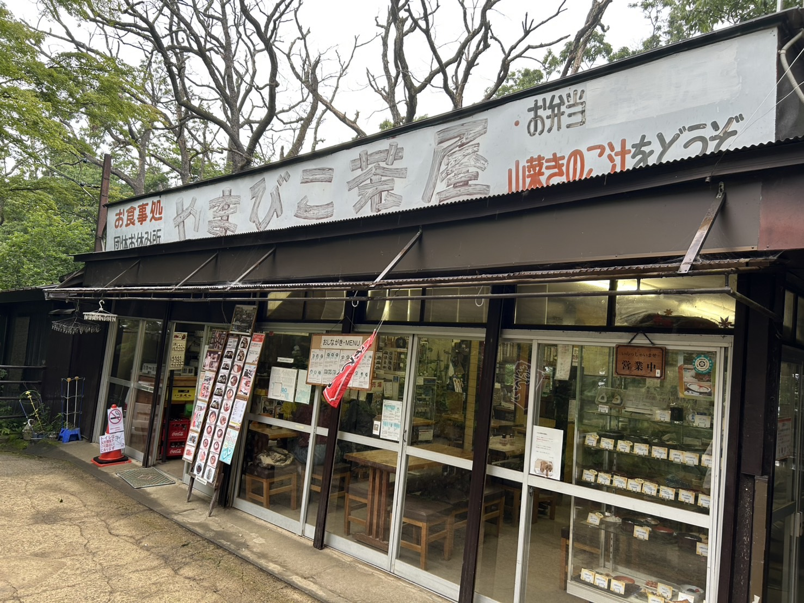
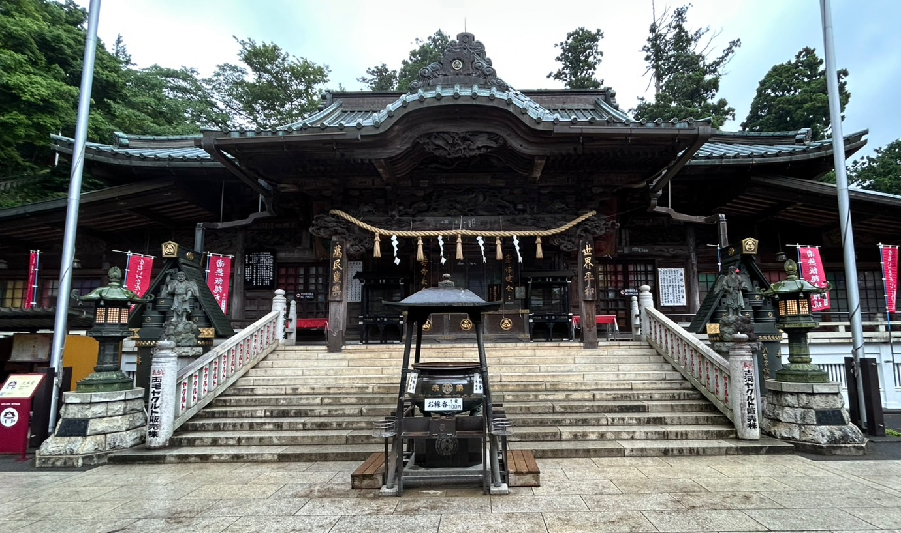

高尾山ケーブルカーの終点である高尾山駅を降りてすぐの場所にある「やまびこ屋」は、お土産探しや軽食にぴったりの立ち寄りスポットです。高尾山限定のお菓子やグッズ、地元産の農産物など、様々な商品が並びます。特に、高尾山の自然をモチーフにしたお菓子や、可愛らしいキャラクターグッズは人気を集めています。登山前後の休憩にも最適で、ソフトクリームや団子など、小腹を満たす軽食も楽しめます。

高尾山の中腹に位置する「高尾山薬王院」は、真言宗智山派の大本山であり、開山以来1200年以上の歴史を持つ古刹です。修験道の霊場として知られ、飯縄大権現（いづなだいごんげん）を本尊としています。境内には、美しい本堂や大師堂、護摩堂など、見どころが豊富です。特に、天狗信仰の中心地としても知られ、大天狗と小天狗の像が祀られています。参拝者は、御朱印をいただいたり、精進料理を体験したりすることもできます。また、毎年3月には火渡り祭が行われ、多くの参拝者で賑わいます。

高尾山ケーブルカーの高尾山駅から徒歩すぐの場所にある「さる園・野草園」は、自然と動物に触れ合える人気の施設です。
さる園: 約60頭のニホンザルが飼育されており、自然に近い環境で群れをなして生活する姿を観察できます。定期的に餌付けの時間があり、サルたちが活発に動き回る様子は訪れる人々を楽しませます。愛らしい子ザルの姿や、サル同士の社会的な関係性を見ることもできます。
野草園: さる園に併設されており、高尾山に自生する約300種類の野草が栽培・展示されています。四季折々に美しい花を咲かせる草花を間近で観察でき、それぞれの植物には名前や特徴が書かれた札が立てられています。高尾山の豊かな自然を学ぶことができるだけでなく、珍しい植物に出会えることもあります。